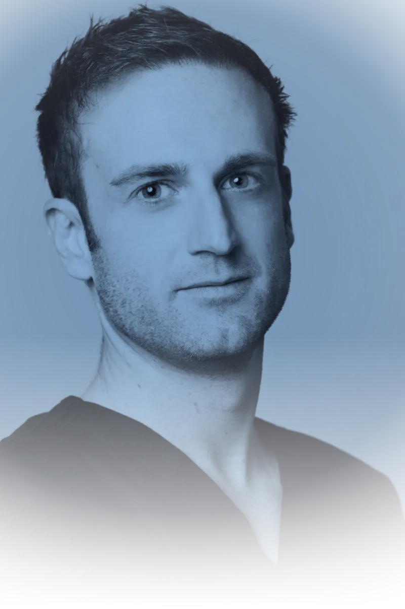

From Montpellier
to Sète.
After passing the competitive surgical residency examination, Dr François Lozach was appointed Surgical Resident at the Montpellier University Hospitals.
He trained under Professor Philippe Maury, who conveyed with great passion the complexity of lower limb surgery — the rigour of a specialty that tolerates no approximation.
He spent eight years specialising in hip and knee arthroplasty — primary and revision — arthroscopic surgery, foot surgery, and traumatology.
He took part in humanitarian surgical missions in countries engaged in armed conflict, under the auspices of Médecins Sans Frontières (Doctors Without Borders).
As a court-appointed Medical Expert, he participates in medico-legal assessments at the Montpellier Court of Appeal.